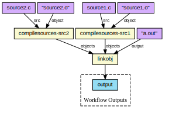

Workflow: Workflow Name
This workflow documentation explains the purpose of the workflow and the main techniques used. Steps are documented individually further down. This is just an example documentation for the template, real documentation might be even longer than this!


- Selected
- |
- Default Values
- Nested Workflows
- Tools
- Inputs/Outputs
Requires:
Inputs
There are no inputs in this workflow
| ID | Type | Label | Doc |
|---|---|---|---|
| ID | Type | Label |
Description might be a bit longer |
Steps
There are no steps in this workflow
| ID | Runs | Label | Doc |
|---|---|---|---|
| ID |
workflow.cwl (?)
|
Label |
Description might be a bit longer |
Outputs
There are no outputs in this workflow
| ID | Type | Label | Doc |
|---|---|---|---|
| ID | Type | Label |
Description might be a bit longer |
Permalink:
https://w3id.org/cwl/view/git/933bf2a1a1cce32d88f88f136275535da9df0954/workflows/larger/test-hello.cwl